Placa mãeMother Board
A placa mãe (do inglês: mainboard ou motherboard)
é a parte do computador responsável por conectar e interligar todos os
componentes do computador, ou seja, processador com memória RAM, disco
rígido, placa gráfica, entre outros. Além de permitir o tráfego de informação, a placa também alimenta alguns periféricos com a energia elétrica que recebe da fonte de alimentação.
Tipos de Placas mãe
AT
AT é a sigla para Advanced Technology. Trata-se de um tipo de placa-mãe já antiga. Seu uso foi constante de 1983 até 1996.
Um dos fatores que contribuíram para que o padrão AT deixasse de ser
usado (e o ATX fosse criado), é o espaço interno reduzido, que com a
instalação dos vários cabos do computador (flat cable,
alimentação), dificultavam a circulação de ar, acarretando, em alguns
casos danos permanentes à máquina devido ao super aquecimento. Isso
exigia grande habilidade do técnico montador para aproveitar o espaço
disponível da melhor maneira. Além disso, o conector de alimentação da
fonte AT, que é ligado à placa-mãe, é composto por dois plugs
semelhantes (cada um com seis pinos), que devem ser encaixados lado a
lado, sendo que os fios de cor preta de cada um devem ficar localizados
no meio. Caso esses conectores sejam invertidos e a fonte de alimentação
seja ligada, a placa-mãe será fatalmente queimada. Com o padrão AT, é
necessário desligar o computador pelo sistema operacional, aguardar um
aviso de que o computador já pode ser desligado e clicar no botão "Power"
presente na parte frontal do gabinete. Somente assim o equipamento é
desligado. Isso se deve a uma limitação das fontes AT, que não foram
projetadas para fazer uso do recurso de desligamento automático. Os
modelos AT geralmente são encontrados com slots ISA, EISA, VESA nos primeiro modelos e, ISA e PCI nos mais novos AT (chamando de baby
AT quando a placa-mãe apresenta um tamanho mais reduzido que os dos
primeiros modelos AT). Somente um conector "soldado" na própria
placa-mãe, que no caso, é o do teclado que segue o padrão DIN e o mouse
utiliza a conexão serial. Posição dos slots de memória RAM e
soquete de CPU sempre em uma mesma região na placa-mãe, mesmo quando
placas de fabricantes diferentes. Nas placas AT são comuns os slots de memória SIMM ou SDRAM, podendo vir com mais de um dos padrões na mesma placa-mãe.Embora cada um destes tenha de ser utilizado individualmente.
ATX
ATX é a sigla para "Advanced Technology Extended". Pelo nome, é possível notar que trata-se do padrão AT aperfeiçoado. Um dos principais desenvolvedores do ATX foi a Intel.
O objetivo do ATX foi de solucionar os problemas do padrão AT (citados
anteriormente), o padrão apresenta uma série de melhorias em relação ao
anterior. Atualmente a maioria dos computadores novos vêm baseados neste
padrão.
Entre as principais características do ATX, estão:
- o maior espaço interno, proporcionando uma ventilação adequada,
- conectores de teclado e mouse no formato mini-DIN PS/2 (conectores menores)
- conectores serial e paralelo ligados diretamente na placa-mãe, sem a necessidade de cabos,
- melhor posicionamento do processador, evitando que o mesmo impeça a instalação de placas de expansão por falta de espaço
Quanto à fonte de alimentação, encontramos melhoras significativas. A
começar pelo conector de energia ligado à placa-mãe. Ao contrário do
padrão AT, não é possível encaixar o plug de forma invertida. Cada orifício do conector possui um formato, que dificulta o encaixe errado.
A posição dos slots de memória RAM e socket de CPU variam a posição conforme o fabricante. Nestas placas serão encontrados slots de memória SDRAM, Rambus, DDR, DDR2 ou DDR3, podendo vir com mais de um dos padrões na mesma placa-mãe. Geralmente os slots de expansão mais encontrados são os PCI, AGP, AMR/CNR e PCI-Express. As placas mais novas vêm com entrada na própria placa-mãe para padrões de disco rígido IDE,
Serial ATA ou Serial ATA II. Gerenciamento de energia quando desligado o
micro, suporta o uso do comando "shutdown", que permite o desligamento
automático do micro sem o uso da chave de desligamento encontrada no
gabinete. Se a placa mãe for alimentada por uma fonte com padrão ATX é
possível ligar o computador utilizando um sinal externo como, por
exemplo, uma chamada telefônica recebida pelo modem instalado.
BABY AT
Como o
nome leva a deduzir,é uma versão de tamanho reduzido da placa-mãe padrão
AT original. Essa redução foi possível com miniaturização de muitos
componentes internos.
BTX
É um formato de
motherboards criado pela Intel e lançado em 2003 para substituir o
formato ATX. O objetivo do BTX foi aperfeiçoar o desempenho do sistema e
melhorar a ventilação interna. Atualmente, o desenvolvimento desse
padrão está parado.
ITX
É um padrão de placa-mãe criado em outubro de 2001 pela VIA Technologies.
Destinada a computadores altamente integrados e compactados,
com a filosofia de oferecer não o computador mais rápido do mercado,
mas sim o mais barato, já que na maioria das vezes as pessoas usam um
computador para poder navegar na Internet e editar textos.
A intenção da placa ITX é ter tudo on-board, ou seja, vídeo, áudio, modem e rede integrados na placa-mãe.
Outra diferença dessa placa-mãe está em sua fonte de alimentação.
Como possui menos periféricos, reduzindo assim o consumo de energia,
sua fonte de alimentação pode ser fisicamente menor, possibilitando
montar um computador mais compacto.
LPX
As placas
padrão LPX possuem uma característica que as torna facilmente
identificáveis: Possui uma placa "em pé" que se encaixa em uma conexão
específica da placa principal. Nesta placa é encaixada as demais placas
do computador.
Formato de placas-mãe usado por alguns PCs "de marca" como por exemplo Compaq. Seu principal diferencial é não ter slots.
Os slots estão localizados em uma placa a parte, também chamada
"backplane", que é encaixada à placa-mãe através de um conector
especial. Seu tamanho padrão é de 22 cm x 33 cm.
Existe ainda um padrão menor, chamado Mini LPX, que mede 25,4 cm x 21,8 cm.
Esse padrão foi criado para permitir PCs mais "finos", já que as
placas de expansão em vez de ficarem perpendiculares à placa-mãe, como é
o normal, ficam paralelas.
Após o padrão de placas-mãe ATX ter sido lançado, uma versão do LPX baseada no ATX foi lançada, chamada NLX.
Visualmente falando é fácil diferenciar uma placa-mãe LPX de uma
NLX. No padrão LPX o conector para a placa de expansão (backplane) está
localizado no centro da placa-mãe e este é um conector parecido com um
slot (conector "fêmea"). Já no padrão NLX o conector para a placa de
expansão está localizado em uma das laterais da placa, e é um contato de
borda contendo 340 pinos, similar ao usado por placas de expansão (ou
seja, é um conector "macho").
NLX
A placa-mãe NLX
é muito recente e foi criada para microcomputadores que usam
processadores Pentium III e 4. Este design agrupa os melhores recursos
do ATX e do LPX.
Funcionamento
A placa-mãe realiza a interconexão das peças componentes dos microcomputadores. Assim, processador, memória, placa de vídeo, HD, teclado, mouse,
etc. estão ligados diretamente à placa-mãe. Ela possui diversos
componentes eletrônicos (circuitos integrados, capacitores, resistores,
etc) e entradas especiais (slots) para que seja possível conectar os vários dispositivos.
A manutenção é feita por pessoas treinadas, técnicos e engenheiros da área.
Uma forma de remover algumas sujeiras e oxidação simples, que
qualquer pessoa pode fazer é a lavagem com álcool isopropílico. Mas,
também se deve ter um conhecimento mínimo de montagem e manutenção de
microcomputadores.
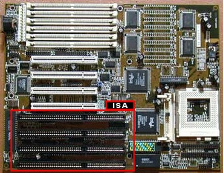 Placa-mãe com slot ISA (destaque) | 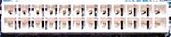 Conector de energia ATX (24 furos) | 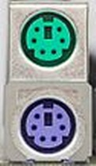 Conectores PS/2 | 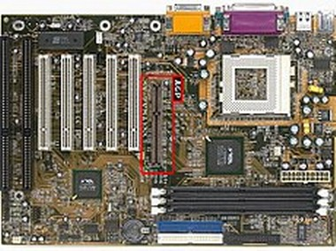 Placa-mãe ATX com slot AGP (destaque) |
Componentes
A placa-mãe pode variar conforme o modelo e fabricante, mas há
componentes que se mantêm. Vamos destacar os mais importantes
componentes de uma placa mãe:
- Processador (conectado ao soquete)
- Memória RAM
- Bios (memória ROM)
- Bateria
- Chipset (norte e sul)
- Slots de expansão (PCI, ISA, AGP...)
- Conector IDE
- Conector SATA
- Conector Mouse(br)/Rato(pt)
- Conector Teclado
- Conector Impressora (porta paralela)
- Conector USB
Chipset
- O northbridge faz a comunicação do processador com as memórias, através do barramento de comunicação externa do processador, e com os barramentos de alta velocidade AGP e PCI Express. Como ele faz o trabalho mais pesado, geralmente requer um dissipador de calor devido ao seu aquecimento elevado.
- O southbridge geralmente é responsável pelo controle de dispositivos de entrada ou saída (I/O) como as interfaces IDE que ligam os HDs, os drives de CD-ROM, drives de DVD-ROM ao processador. Controlam também as interfaces Serial ATA. Geralmente cuidam também do controle de dispositivos on-board como o som.
Controladores
- On-board: como o próprio nome diz, o componente on-board vem diretamente conectado aos circuitos da placa mãe, funcionando em sincronia e usando capacidade do processador e memória RAM quando se trata de vídeo, som, modem e rede. Tem como maior objetivo diminuir o preço das placas ou componentes mas, em caso de defeito o dispositivo não será recuperável, no caso de modem AMR, basta trocar a "placa" do modem AMR com defeito por outra funcionando, pois, este é colocado em um slot AMR na placa-mãe. São exemplos de circuitos on-board: vídeo, modem, som e rede.
- Off-board: são os componentes ou circuitos que funcionam independentemente da placa mãe e por isso, são separados, tendo sua própria forma de trabalhar e não usando o processador, geralmente, quando vídeo, som, modem ou rede, o dispositivo é "ligado" a placa-mãe usando os slots de expansão para isso, têm um preço mais elevado que os dispositivos on-board, sendo quase que totalmente o contrário em todos os aspectos do tipo on-board, ou seja, praticamente todo o processamento é realizado pelo próprio chipset encontrado na placa do dispositivo.
Processador
O processador fica encaixado no soquete devendo observar que uma
placa-mãe não aceita qualquer tipo de processador, pois é desenvolvida
para soquetes específicos. Cada tipo de processador tem características
que o diferenciam de outros modelos, a quantidade de pinos, por exemplo,
ou o barramento da ponte norte. Assim sendo, a placa-mãe deve ser
desenvolvida para aceitar determinados processadores.
Memória RAM
As placas-mãe mais antigas trabalhavam com tecnologia conhecida com SDR SDRAM e a DDR[desambiguação necessária], atualmente o padrão mais usado é o DDR3.
Com relação à capacidade de instalação de memória RAM nas
placas-mãe mais antigas chegavam a 32 MiB ou 64 MiB, entretanto hoje não
é dificil achar micros com módulos de memória com 1 GiB ou 2 GiB,
podendo chegar em algumas placas para servidor a 128 GiB (embora essas
placas sejam muito raras, a possibilidade existe).
BIOS
BIOS (Basic Input Output System) é um tipo de chip (Flash-ROM) que contém um pequeno software responsável por controlar o uso dos dispositivos e mantém informações de data e hora. O BIOS trabalha junto com o POST (Power On Self Test), um software que testa os componentes do micro em busca de eventuais erros. Podemos alterar as configurações de hardware através do Setup, uma interface também presente na Flash-ROM.
Bateria
A bateria interna do tipo Lítio (bateria de lítio) CR2032 tem a função de manter as informações da Flash-ROM (EEPROM)
armazenadas enquanto o computador está desligado (somente em placas-mãe
antigas, nas atuais sua principal função é manter o relógio interno
funcionando).
A bateria de lítio tem voltagem de três volts e é para manter
funcionando sem atrasar o relógio e outros componentes como as
informações gravadas na BIOS.
Chipset
Chipset é um chip (ou conjunto de chips)
responsável pelo controle de diversos dispositivos de entrada e saída
como o barramento de comunicação do processador, o acesso à memória, o
acesso ao HD, periféricos on-board e off-board, comunicação do processador com a memória RAM e entre outros componentes da placa-mãe. Geralmente, é dividido em southbridge e northbridge.
Slots de expansão
Algumas tecnologias foram desenvolvidas para dar maior flexibilidade
aos computadores pessoais uma vez que cada cliente pretende utiliza-lo
para um fim específico.
O barramento PCI ou (Peripheral Component Interconnect)
é uma tecnologia para conectar diferentes periféricos na Placa-mãe.
Veja maiores detalhes no artigo Peripheral Component Interconnect.
As placas-mãe mais antigas dispunham de outras tecnologias leia os artigos para saber mais: barramento ISA, barramento EISA, barramento VESA.
O barramento AGP ou (Accelerated Graphics Port)
é uma tecnologia de barramento usada principalmente por placas de
vídeo. As placas AGP excedem um pouco em tamanho as placas PCI. A
tecnologia AGP já está sendo substituída pelo barramento PCI Express.
A tecnologia PCI Express conta com um recurso que permite o uso de uma
ou mais conexões seriais. Veja mais no artigo PCI Express.
Controladores
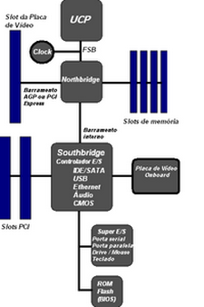 Arquitetura de uma placa-mãe típica. | 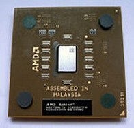 Processador AMD-AthlonXP 1700+ | 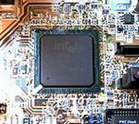 Southbridge da placa-mãe ASUS P4P800-E | 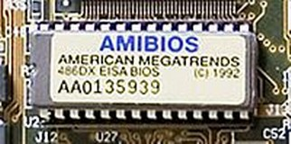 Flash-ROM BIOS da American Megatrends 1992 | 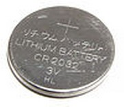 Bateria de Lítio CR2032 3V |
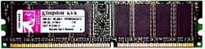 DDR400 de 1GB da Kingston | 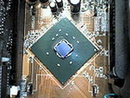 Northbridge da placa-mãe ASUS P4P800-E | 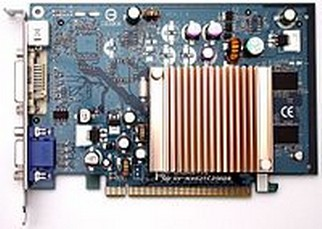 Foto do adaptador gráfico tipo PCI Express Gigabyte com um chipset NVIDIA (Geforce 6200TC) | 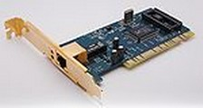 placa de rede 100Mbit tipo PCI da NIC |